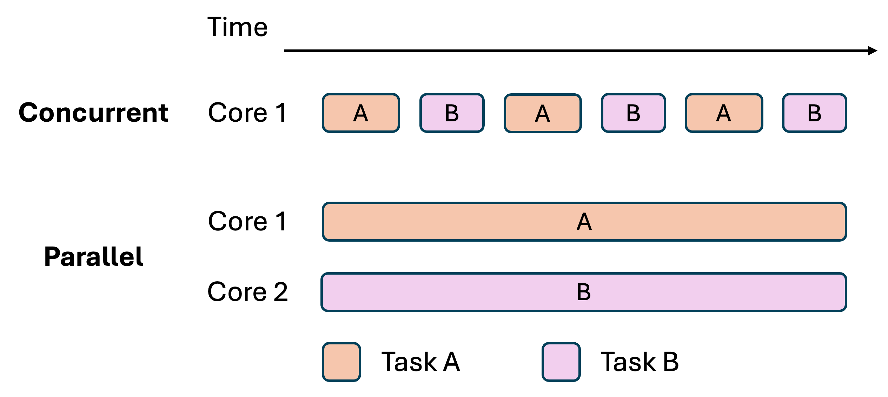
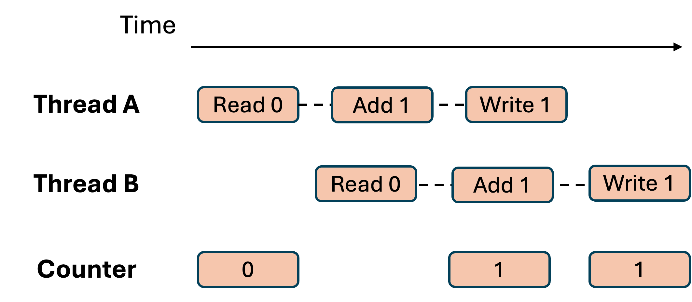
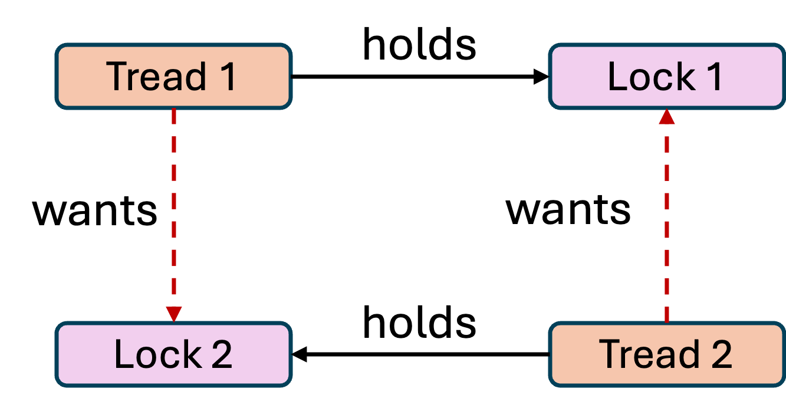

Why concurrency exists
Two motivations:
Throughput: maximize completed work per unit time by using multiple cores
Responsiveness/Latency: keep a system interactive while work happens in the background
Examples:
web server: handle many requests at once (throughput and latency)
UI app: keep interface live while fetching data (latency)
nightly ETL pipeline: process large data sets quickly (throughput)
Many systems need both, and must balance them carefully.
Concurrency vs parallelism
Concurrency:
structuring the program to handle multiple tasks in progress
tasks may interleave, even on a single core
Parallelism:
actually running tasks at the same time on multiple cores
A program can be concurrent without being parallel.

Race condition
Race condition:
program behavior depends on timing or interleaving of tasks
two correct-looking pieces of code can break when combined
Common symptom:
lost updates: two tasks overwrite each other
Concurrency bugs are often:
rare
timing dependent
hard to reproduce and debug
Java: lost update example
Two threads increment a shared counter.
class Counter {
int value = 0;
void inc() { value = value + 1; }
}
public class Demo {
static Counter c = new Counter();
static Runnable work = () -> {
for (int i = 0; i < 1_000_000; i++) c.inc();
};
public static void main(String[] args) throws Exception {
Thread t1 = new Thread(work);
Thread t2 = new Thread(work);
t1.start(); t2.start();
t1.join(); t2.join();
System.out.println(c.value);
}
}Expected: 2,000,000. Actual: often less.
Race Condition: Lost Update

Java: fix with synchronized
synchronized makes the critical section mutually exclusive.
class Counter {
int value = 0;
synchronized void inc() { value = value + 1; }
}Correctness improves, but contention can hurt performance.
Synchronization toolbox
Common primitives:
mutex / lock: mutual exclusion for critical sections
semaphore: limit concurrency or represent resource counts
monitor: lock plus condition waiting
condition variable: block until a predicate becomes true
Many bugs come from:
missing locks
wrong lock scope
inconsistent lock ordering
waiting without a loop
Mutex / lock
Mutex:
allows one thread at a time into a critical section
protects invariants on shared mutable data
Practical guidance:
keep critical sections small
lock around an invariant, not around a single line
document what the lock protects
Semaphore
Semaphore:
a counter controlling how many threads may proceed
acquire()decrements,release()increments
Common uses:
limit concurrency (max N in-flight tasks)
resource pools (N connections, N workers)
Monitor and condition variable
Monitor:
a lock plus a way to wait for conditions safely
wait releases the lock, then blocks, then reacquires before returning
Condition variable:
used with a predicate and a loop
avoids busy waiting
Java: bounded buffer sketch with wait/notify
Producer/consumer using a monitor.
import java.util.*;
class BoundedQueue<T> {
private final int cap;
private final ArrayDeque<T> q = new ArrayDeque<>();
BoundedQueue(int cap) { this.cap = cap; }
public synchronized void put(T x) throws InterruptedException {
while (q.size() == cap) wait();
q.addLast(x);
notifyAll();
}
public synchronized T take() throws InterruptedException {
while (q.isEmpty()) wait();
T x = q.removeFirst();
notifyAll();
return x;
}
}while is required because conditions may change before the lock is reacquired.
Memory model and visibility
Without synchronization, compilers and hardware may:
reorder instructions for optimization
cache writes in registers or local caches, delaying visibility to other threads
Java Memory Model (JMM) formalizes this with happens-before:
if action A happens-before action B, A's writes are guaranteed visible to B
established by: releasing/acquiring a lock, starting a thread, volatile reads/writes
Key insight: locks do more than mutual exclusion; they also enforce memory visibility across threads.
A correctly synchronized program (no data races) behaves as if instructions run in some sequential order.
Deadlock pattern
Deadlock:
threads wait forever because each is waiting for another to release something
Simple pattern:
Thread A holds lock L1, wants L2
Thread B holds lock L2, wants L1
The program may appear correct until it freezes under a rare interleaving.

Deadlock conditions (Coffman)
Deadlock becomes possible when all are present:
mutual exclusion
hold and wait
no preemption
circular wait
Avoidance strategies remove at least one condition.
Java: deadlock example
Two locks, opposite acquisition order.
final Object a = new Object();
final Object b = new Object();
Thread t1 = new Thread(() -> {
synchronized (a) {
try { Thread.sleep(10); } catch (Exception e) {}
synchronized (b) { System.out.println("t1"); }
}
});
Thread t2 = new Thread(() -> {
synchronized (b) {
try { Thread.sleep(10); } catch (Exception e) {}
synchronized (a) { System.out.println("t2"); }
}
});
t1.start(); t2.start();A common fix is consistent lock ordering.
Avoiding deadlocks
Practical techniques:
lock ordering: always acquire locks in a consistent global order
timeouts: abandon and retry rather than wait forever
reduce lock scope and avoid nested locks
prefer higher-level designs: queues, actors, channels
Other common pitfalls
Issues that look like deadlocks or cause similar outages:
blocking I/O while holding a lock
waiting without a loop on a condition variable
unbounded queues causing memory blowups
priority inversion: low priority thread holds a lock needed by high priority work
In production, symptoms often appear as latency spikes and request timeouts.
Livelock and starvation
Both are liveness failures: the system is running but some threads make no progress.
Livelock:
threads are not blocked, but keep reacting to each other with no net progress
example: two threads each detect a conflict and retry simultaneously, forever yielding to each other
harder to detect than deadlock because the CPU appears busy
Starvation:
a thread is perpetually denied access to a resource despite being runnable
common cause: unfair scheduling or a high-priority thread monopolizing a lock
fix: use fair locks or bounded waiting policies
Contrast with deadlock: in a deadlock all involved threads are blocked; in livelock they are active; in starvation only some are indefinitely delayed.
Message passing model
Message passing:
components communicate by sending messages
shared memory is minimized or avoided
state is owned by one component and updated sequentially
Benefits:
fewer shared-memory races
clearer ownership boundaries
Costs:
messaging overhead and protocol design
must handle ordering, retries, and failures in distributed cases
Go's central idea
"Do not communicate by sharing memory.
Instead, share memory by communicating."
What this means in practice:
instead of multiple goroutines reading and writing the same variable, one goroutine owns the data
when another goroutine needs it, the data is sent through a channel
ownership transfers with the message; only one goroutine has the data at a time
no shared state means no locks needed, and no deadlocks from locks
Think of it like email: you do not edit a shared file together simultaneously; you send it, and the recipient takes over.
What is a goroutine?
Short answer: a goroutine is Go's version of a thread. It is an independent concurrent task that runs alongside other goroutines.
You start one with just the word go:
doWork() // normal call: your program waits here until done
go doWork() // goroutine: a new "thread" starts; your program moves on immediatelyWhy Go uses goroutines instead of calling them threads:
an OS thread costs about 1 MB of memory; a goroutine starts at about 2 KB
you can have hundreds of thousands of goroutines; that many OS threads would crash the system
the Go runtime multiplexes goroutines onto a small pool of real OS threads automatically
but conceptually: one goroutine = one independent concurrent task = one thread
Goroutine = thread
Think of each goroutine as a separate thread.
go boilPasta() // Thread 1: runs independently in background
go chopVeggies() // Thread 2: also runs independently at the same time
waitForBoth() // main thread waits for both to finishWithout
go(sequential): boil pasta (15 min), then chop (5 min) = 20 min totalWith
go(concurrent): both run at the same time = 15 min totalOn a single CPU core, these threads interleave (take turns rapidly)
On multiple cores, they run truly in parallel. The code is identical either way; Go handles the scheduling.
Actor model intuition
Actor:
owns its state
processes one message at a time
can send messages to other actors
Typical result:
fewer data races in local actor state
concurrency scales by adding more actors
Similar ideas appear in event-driven microservices and queue-based systems.
Channels as coordination
Channel:
a queue connecting producers and consumers
can be buffered or unbuffered
can provide backpressure by blocking senders when full
Channels often simplify reasoning:
send/receive is explicit coordination
avoid many shared-memory locks
Channel syntax: send and receive
Create a channel that carries integers:
ch := make(chan int) // unbuffered channel
ch := make(chan int, 5) // buffered: holds up to 5 valuesSend and receive (the arrow always shows the direction data flows):
ch <- 42 // SEND: put 42 into the channel (arrow points into ch)
x := <-ch // RECEIVE: take a value out (arrow points out of ch)The critical rule: channels block.
sending blocks until a receiver is ready
receiving blocks until a sender puts something in
this automatic synchronization replaces many lock patterns
Buffered vs unbuffered channels
Unbuffered (default): sender blocks until the receiver is ready. Both threads must meet at the same moment.
ch := make(chan int) // unbuffered
// Thread 1 // Thread 2
ch <- 42 // BLOCKS here until Thread 2 receives
x := <-ch // both threads sync at this pointBuffered: sender can drop values in without waiting, up to the buffer capacity.
ch := make(chan int, 3) // buffered: holds up to 3 values
// Thread 1 can run ahead:
ch <- 1 // goes into buffer, does NOT block
ch <- 2 // goes into buffer, does NOT block
ch <- 3 // goes into buffer, does NOT block
ch <- 4 // buffer full: NOW blocks until Thread 2 reads one- unbuffered = passing a baton (both runners meet at the same spot);
- buffered = leaving parcels in a mailbox (sender does not wait for the recipient).
Go Example: Ticketing
ticketsLeft lives only inside inventoryManager. No other goroutine can see or touch it.
package main
import "fmt"
type BookingRequest struct {
customerID int
reply chan string // owner sends the answer back here
}
// THE OWNER: the only goroutine that ever reads or writes ticketsLeft
func inventoryManager(requests chan BookingRequest) {
ticketsLeft := 3 // private to this goroutine; no other goroutine can touch it
for req := range requests { // process one request at a time
if ticketsLeft > 0 {
ticketsLeft--
req.reply <- fmt.Sprintf("Customer %d: booked! (%d left)", req.customerID, ticketsLeft)
} else {
req.reply <- fmt.Sprintf("Customer %d: sold out", req.customerID)
}
}
}
func main() {
requests := make(chan BookingRequest, 10)
go inventoryManager(requests) // start the owner goroutine
results := make(chan string, 5)
for id := 1; id <= 5; id++ { // 5 customers arrive simultaneously
go func(id int) {
reply := make(chan string, 1)
requests <- BookingRequest{id, reply} // ask the owner
results <- <-reply // wait for answer
}(id)
}
for i := 0; i < 5; i++ { fmt.Println(<-results) }
}Go: worker pool pattern
A common production pattern:
a bounded number of worker goroutines
a jobs channel
a results channel
Why it matters:
bounds resource usage
provides backpressure under overload
avoids spawning unbounded goroutines
Practice: detect a channel deadlock
What happens here?
package main
func main() {
ch := make(chan int)
ch <- 1
}Does it finish, block, or crash
Why
Practice Answer: detect a channel deadlock
It panics immediately with a runtime deadlock error:
fatal error: all goroutines are asleep - deadlock!ch is unbuffered: a send blocks until a receiver is ready
there is no receiver goroutine
the Go runtime detects that all goroutines are sleeping and panics rather than hanging silently
Compare to Java: a Java deadlock hangs silently. Go crashes immediately with a clear error, which is much easier to debug.
Note: the runtime can only detect this when every goroutine is blocked. If a goroutine were spinning, the deadlock would go undetected.
What is a Future / Promise?
A Promise (JS/TS) or Future (Java, Scala) is a placeholder for a value that does not exist yet.
- Key idea: separate starting a computation from using its result
const p: Promise<number> = fetchPrice("AAPL"); // starts immediately, returns a placeholder
// ... do other work while the fetch runs ...
const price = await p; // use the result later, when neededpending: the computation is still running
fulfilled: it finished successfully, the value is ready
rejected: it failed, an error is available
The problem Promises solve: callback hell
Before Promises, sequential async steps required deeply nested callbacks:
// Callback style: "pyramid of doom"
fetchUser(id, (user) => {
fetchOrders(user, (orders) => {
fetchInvoice(orders[0], (invoice) => {
console.log(invoice); // three levels deep, error handling missing
});
});
});Promises flatten this into a readable chain:
// Promise chain: flat and readable
fetchUser(id)
.then(user => fetchOrders(user))
.then(orders => fetchInvoice(orders[0]))
.then(invoice => console.log(invoice))
.catch(err => console.error(err)); // one handler for all errorsJS/TS: Promise basics
// Creating a Promise manually
const p = new Promise<number>((resolve, reject) => {
setTimeout(() => resolve(42), 1000); // fulfills after 1s
// or: reject(new Error("something went wrong"))
});
// Consuming a Promise
p.then(value => console.log("got:", value)) // runs on fulfillment
.catch(err => console.error("error:", err)) // runs on rejection
.finally(() => console.log("always runs")); // cleanup, like finally in try/catch
// With async/await (same thing, cleaner syntax)
try {
const value = await p;
console.log("got:", value);
} catch (err) {
console.error("error:", err);
} finally {
console.log("always runs");
}In practice you rarely construct a new Promise manually.
Library functions (fetch, fs.readFile, setTimeout wrapped) return Promises
for you. You mostly consume them with await or .then().
JS/TS: combining multiple Promises
// All four start simultaneously (NOT sequential awaits)
const [user, orders, config] = await Promise.all([
fetchUser(id), fetchOrders(id), fetchConfig()
]);| Combinator | Resolves when | Rejects when | Use case |
|---|---|---|---|
Promise.all |
all fulfill | any rejects (fast-fail) | need all results; one failure = abort |
Promise.allSettled |
all settle (either way) | never rejects | want all outcomes; failures reported not thrown |
Promise.race |
first to settle | first to settle (if reject) | timeout: race a fetch against a delay Promise |
Promise.any |
first to fulfill | all reject | try multiple sources; use whichever responds first |
Java: CompletableFuture
Java's equivalent of Promises. Same ideas, typed API.
// Start an async computation in the thread pool
CompletableFuture<User> userFuture =
CompletableFuture.supplyAsync(() -> fetchUser(id));
// Chain transformations (.then() equivalent)
CompletableFuture<List<Order>> ordersFuture =
userFuture.thenApply(user -> fetchOrders(user));
// Block and get the result (like await)
List<Order> orders = ordersFuture.join();
// Combining (like Promise.all)
CompletableFuture.allOf(future1, future2, future3)
.join(); // waits for all threeComparison:
supplyAsync=new Promise+ work runs in thread poolthenApply=.then()exceptionally=.catch()join()=await(blocks the calling thread)
Why async? The cost of waiting for I/O
Most of a web server's time is spent waiting: for a database to reply, a file to load, an API to respond.
Thread-per-request model: assign one thread to each request; it blocks while waiting.
10,000 concurrent requests = 10,000 threads = roughly 10 GB of memory just for thread stacks
most of those threads are sleeping, doing nothing useful
Event loop model (Node.js, Python asyncio): one thread handles everything, but never blocks.
like a single restaurant waiter serving many tables
while table 3 waits for food (I/O), the waiter takes table 7's order (another task)
the waiter only freezes if they stop to make a phone call; that must never happen in your code
Event loop model
Event loop:
one main thread processes queued tasks/callbacks
I/O registers completion events, then returns quickly
when I/O completes, a callback/task is queued
Benefits:
handles many concurrent I/O tasks efficiently
reduces shared-memory races when most code runs on one thread
Cost:
blocking the event loop breaks responsiveness for everything
async/await is built on Promises
They are the same model. async/await is a more readable way to write Promise code.
// An async function ALWAYS returns a Promise
async function getUser(id: string): Promise<User> {
return fetchUser(id); // auto-wrapped in Promise.resolve()
}
// await is just cleaner syntax for .then()
// These two do exactly the same thing:
const user = await getUser("123");
getUser("123").then(user => { /* same result */ });Everything you learned about Promises applies. async/await does not add new behaviour — it just makes the code easier to read and reason about.
What does await actually do?
When you write
await someOperation(), three things happen:the current function pauses at that line
control returns to the event loop so other tasks can run
when the operation completes, the event loop resumes your function from exactly where it left off
async function f() {
console.log("A"); // runs on the event loop thread
await delay(10); // pauses f; event loop is free to run other tasks
console.log("B"); // resumes here after 10ms; still the same thread
}- The same single thread pauses one task and picks up another
- This is why async code mostly avoids race conditions: only one function runs at a time.
JS/TS: basic async/await
function delay(ms: number): Promise<void> {
return new Promise(resolve => setTimeout(resolve, ms));
}
async function f(): Promise<void> {
console.log("A");
await delay(10);
console.log("B");
}
console.log("start");
f();
console.log("end");Typical output: start, A, end, then later B.
JS/TS: sequential vs parallel awaits
function work(x: number): Promise<number> {
return new Promise(resolve => setTimeout(() => resolve(x * x), 10));
}
async function sequential(xs: number[]): Promise<number[]> {
const out: number[] = [];
for (const x of xs) out.push(await work(x));
return out;
}
async function parallel(xs: number[]): Promise<number[]> {
return Promise.all(xs.map(work));
}parallel starts all operations first, then awaits completion.
Python: async/await basics
import asyncio
async def work(x: int) -> int:
await asyncio.sleep(0.01)
return x * x
async def main() -> None:
xs = [1, 2, 3, 4]
ys = await asyncio.gather(*(work(x) for x in xs))
print(ys)
asyncio.run(main())gather is similar to Promise.all: all tasks start simultaneously.
Async does not imply CPU parallelism
Many async runtimes:
overlap I/O waits
run callbacks on one main thread
Consequence:
CPU-heavy code blocks the event loop
for CPU-heavy work, use worker pools, threads, or processes
This is why production Node services often offload CPU-heavy tasks.
Practice: predict output ordering (JS/TS)
Predict the order.
function delay(ms: number): Promise<void> {
return new Promise(r => setTimeout(r, ms));
}
async function g(): Promise<void> {
console.log("g1");
await delay(0);
console.log("g2");
}
console.log("A");
g();
console.log("B");Practice Answer: predict output ordering (JS/TS)
Output: A, g1, B, g2
A prints first
g() is called; runs until await; prints g1
await delay(0) yields to the event loop even with 0 ms; await always yields before continuing
control returns to main; B prints
event loop resumes g; g2 prints
Key insight: await delay(0) is not a no-op. Any await gives the event loop a turn to run other tasks first.
Rust: the problem with other languages
- In Java, this compiles and runs, but produces a race condition at runtime:
int value = 0;
void inc() { value = value + 1; } // compiles fine, races silentlyif your code has a data race, it will not compile
if it compiles, the compiler has verified there are no data races
this guarantee holds without a garbage collector and without a runtime checker
Rust: how ownership prevents races
Rust's core rule: at any moment, a value has exactly one owner.
For concurrency, this means the compiler tracks who owns each piece of data:
if you try to send data to another thread without transferring ownership, it will not compile
if you try to share mutable data across threads without synchronization, it will not compile
safe shared mutation requires explicit wrappers:
ArcandMutex
Takeaway: language design can move concurrency errors from runtime bugs to compile-time constraints. You write slightly more code upfront; you get a correctness guarantee in return.
Rust: Arc and Mutex explained
Two types work together to allow safe shared mutation across threads:
Mutex<T>: wraps a value so it can only be accessed while the lock is held.
let m = Mutex::new(0);
let mut val = m.lock().unwrap(); // acquire lock; get access to the inner value
*val += 1; // modify it
// lock is released automatically when `val` goes out of scopeArc<T> (Atomic Reference Counting): allows multiple owners across threads. Like a shared pointer that is safe to clone and send to other threads.
let shared = Arc::new(Mutex::new(0));
let clone = Arc::clone(&shared); // both point to the same Mutex
// give `clone` to another thread; Arc tracks ownership count atomicallyTogether, Arc<Mutex<T>> is Rust's standard pattern for anything equivalent to a Java synchronized field.
Rust: what the compiler catches
If you try to share data across threads without
ArcandMutex, the compiler rejects it:
let mut count = 0;
thread::spawn(|| {
count += 1; // compile error!
});
// error: closure may outlive the current function
// note: `count` is borrowed here but needs to be owned by the new threadArc<Mutex<_>>).The problem: orphaned tasks
In Go, launching a goroutine is fire-and-forget:
func handleRequest(w http.ResponseWriter, r *http.Request) {
go logAnalytics(r) // launched and forgotten
sendResponse(w) // request finishes and returns
}
// logAnalytics keeps running after the response is sent.
// If it panics or leaks, nobody knows. No way to cancel it.In JS/TS, an unawaited Promise fails silently:
async function handleRequest() {
fetchAnalytics(); // unawaited: if this rejects, nobody catches it
return sendResponse();
}These are orphaned tasks: concurrent work with no parent tracking its lifetime. Common consequences:
resource leaks (database connections, file handles never closed)
uncaught errors that silently corrupt state
tasks that outlive their context and use stale data
Structured concurrency: the core rule
A concurrent task cannot outlive the scope that created it.
When a scope exits:
if all children finished successfully, the scope returns normally
if any child failed, remaining children are cancelled and the error propagates
the scope does not return until every child has finished or been cancelled
- Analogy:
- a regular function call. When you call
f(), you know exactly when it returns; everything it started is done by then. Structured concurrency gives concurrent tasks the same guarantee. - Compare to goto:
- Unstructured jumps were replaced by functions, loops, and if-statements (structured programming). Structured concurrency does the same for concurrent execution.
Languages with native support: Java 21 (StructuredTaskScope), Kotlin (coroutineScope), Swift (async let / TaskGroup).
Java 21: StructuredTaskScope
Fetch user and orders in parallel. If either fails, cancel the other.
String result;
try (var scope = new StructuredTaskScope.ShutdownOnFailure()) {
Future<User> user = scope.fork(() -> fetchUser(id));
Future<List<Order>> orders = scope.fork(() -> fetchOrders(id));
scope.join(); // wait for both subtasks
scope.throwIfFailed(); // if either threw, rethrow here
result = buildResponse(user.resultNow(), orders.resultNow());
} // scope closes: any still-running subtasks are cancelled automatically
// both subtasks are guaranteed to have finished before this lineKey properties:
ShutdownOnFailure: if one subtask throws, the other is cancelledShutdownOnSuccess: cancel remaining subtasks as soon as one succeeds (useful for racing)the try-with-resources block is the scope boundary; nothing leaks out
Kotlin: coroutineScope
Kotlin coroutines enforce structured concurrency by default.
suspend fun loadDashboard(id: String): Dashboard = coroutineScope {
// async launches a child coroutine inside this scope
val user = async { fetchUser(id) }
val orders = async { fetchOrders(id) }
// both run concurrently inside the scope
Dashboard(user.await(), orders.await())
// coroutineScope does NOT return until both children finish
// if either throws, the other is cancelled and the exception propagates
}Contrast with GlobalScope.launch (unstructured, discouraged):
// Bad: fire-and-forget, no parent, no cancellation
GlobalScope.launch { fetchUser(id) } // orphaned taskKotlin's design makes the structured approach the easy path and the unstructured approach explicit and obviously named.
JS/TS: approximating structured concurrency
JS/TS has no native scope enforcement, but Promise.all approximates
the "wait for all children" guarantee:
// Structured-style: all tasks tied to this function's lifetime
async function loadDashboard(id: string): Promise<Dashboard> {
const [user, orders] = await Promise.all([
fetchUser(id), // child task 1
fetchOrders(id), // child task 2
]);
return { user, orders };
// function does not return until both are done (or one rejects)
}
// Unstructured (avoid): fire-and-forget
async function bad(id: string) {
fetchUser(id); // unawaited, orphaned, no error handling
return doOtherWork();
}Practical rule: always await every Promise you create.
If you intentionally fire-and-forget, attach a .catch() handler so errors are not silently swallowed.
Practice: spot the orphaned task
Which of these has an orphaned task? What goes wrong?
// Version A
async function processOrder(id: string) {
await saveOrder(id);
sendConfirmationEmail(id); // returns a Promise
return { success: true };
}
// Version B
async function processOrder(id: string) {
await saveOrder(id);
await sendConfirmationEmail(id);
return { success: true };
}Practice Answer: spot the orphaned task
Version A has an orphaned task.
sendConfirmationEmail(id)returns a Promise that is never awaitedthe function returns
{ success: true }immediately, before the email is sentif the email call fails, the error is silently discarded; the caller sees success
if the server shuts down right after the response, the email may never send
Version B is structured: the function does not return until the email call completes or throws. If it throws, the error propagates to the caller.
If sending the email is genuinely optional and should not block the response, the correct fix is still explicit:
sendConfirmationEmail(id).catch(err => logger.error("email failed", err));
// intentionally not awaited; error is handled explicitly, not silently droppedComparing the models
| Java / C# | Go | JS/TS / Python | Rust | |
|---|---|---|---|---|
| Model | Shared memory + locks | Message passing + channels | Event loop + async/await | Shared memory, compile-time safe |
| Best for | CPU-heavy parallel work | Many concurrent tasks, pipelines | I/O-heavy servers, APIs | Systems needing both speed and safety |
| Race detection | At runtime (or not at all) | By design (no sharing) | Single thread (mostly safe) | At compile time |
| Deadlock risk | Yes | Lower (channels reduce it) | No (single thread) | Possible but rarer |
Choosing a concurrency model in practice
Questions engineers ask:
Is the workload I/O-heavy or CPU-heavy
How many concurrent tasks are typical at peak
What are latency requirements and tail latency constraints
What failure modes matter: overload, backpressure, partial outages
In practice, systems often mix models:
async I/O for network calls
worker pools for CPU-bound transformations
message queues for cross-service decoupling
Web servers: typical concurrency choices
Common architectures:
thread-per-request: simple mental model, heavy at high scale
thread pool: bound thread count, queue work
event loop: many I/O connections, fewer threads
hybrid: event loop plus worker pool
The best choice depends on workload shape and performance goals.
Backpressure and overload
Under load:
unbounded queues increase memory usage and latency
downstream services become bottlenecks
Practical mechanisms:
bounded queues and worker pools
semaphores limiting in-flight work
timeouts, retries with jitter, circuit breakers
Practice 6: choose a model
For each service, choose a reasonable default concurrency model and explain why:
chat server that mostly does network I/O
image resizing service that is CPU-heavy
API gateway that calls many downstream services
log processor that does batch transformations nightly
Practice 6 Answer: choose a model
One reasonable set of choices:
chat server: event loop or async I/O, worker pool for CPU tasks if needed
image resizing: threads/processes for CPU parallelism
API gateway: async I/O, bounded concurrency, timeouts
batch log processor: parallel map/reduce style, worker pools, distributed if needed
Concurrency models: the full picture
Core models (each a different approach to the same problem):
| Model | Core idea | Languages |
|---|---|---|
| Shared memory + locks | threads share memory; protect with mutex / semaphore / monitor | Java, C++, C#, Python |
| Message passing (CSP) | no sharing; data flows through typed channels | Go, Rust |
| Actor model | each actor owns state; communicates via mailbox only | Erlang, Elixir, Akka |
| Futures and Promises | placeholder for a future value; composable and combinable | JS/TS, Java, Scala, Python |
| Async/await + event loop | one thread, non-blocking I/O, cooperative scheduling | JS/TS, Python, C#, Rust |
| Ownership-based | compile-time rules prevent data races entirely | Rust |
| Structured concurrency | child tasks cannot outlive their parent scope | Java 21, Kotlin, Swift |
Specialized concurrency models (reference)
| Model | Core idea | Where you see it |
|---|---|---|
| Software Transactional Memory | memory updates commit or roll back atomically, like DB transactions | Haskell, Clojure |
| Coroutines | cooperative multitasking; functions suspend and resume at yield points | Kotlin, Python generators, Lua |
| Reactive streams | data flows as a stream with built-in backpressure between stages | RxJS, Project Reactor, Akka Streams |
| Data parallelism | apply the same operation to a large dataset in parallel, implicitly | Java parallel streams, NumPy, Spark |
| Fork / join | recursively divide work into subtasks; idle threads steal work | Java ForkJoinPool, Cilk |
| Lock-free / atomic | use hardware compare-and-swap instead of locks; no blocking | java.util.concurrent.atomic, std::atomic (C++) |
Review questions
Give one throughput example and one latency example for concurrency
Why is
value = value + 1unsafe across threads without synchronizationWhat does happens-before guarantee, and what establishes it in Java
What is a simple deadlock avoidance strategy
How does livelock differ from deadlock; how does starvation differ from both
In Go, what happens when you send on an unbuffered channel with no receiver; why is that better than Java
What is the difference between
Promise.allandPromise.allSettled; when would you choose eachWhy does
await delay(0)still yield to the event loop even with a zero-millisecond delayWhat does
Arc<Mutex<T>>in Rust do, and why are both wrappers neededWhat is an orphaned task; give one JS/TS example of how one is accidentally created
What guarantee does structured concurrency make that plain
async/awaitdoes not